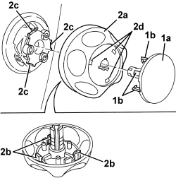

7045A25 FRONT SEAT BACKREST LUMBAR ADJUSTMENT KNOB (ONE), LEFT OR RIGHT - R.R.
- Path
- Procedures > 70 FITTINGS > 7045 FRONT SEATS > 7045A FRONT SEAT ASSEMBLY > 7045A25 FRONT SEAT BACKREST LUMBAR ADJUSTMENT KNOB (ONE), LEFT OR RIGHT - R.R.
- Kind
- repair procedure (removal / refitting; the operation number is the code)
- Applies to
- all engines; all production periods
- Interactive page
- https://sloeber94.github.io/elrnDB/#/939011290
Applies to: all engines; all production periods
 Removing
Removing
 Refitting
Refitting- Place the seat in a suitable position.
1. Remove the cover (1a) releasing the retainers (1b).
2. Remove the knob (2a) releasing the internal retainers (2b) from seats (2c), working through slots (2d) using a screwdriver.

Applies to: all engines; all production periods
Refitting
Removing- Insert the knob, doing up the retainers in the seats.
- Fit the cover and do up the retainers.
- Place the seat in a middle position.
Topics that link to this page (11)
- O010 FRONT SEAT LUMBAR ADJUSTMENT NOT WORKING
- 5580C44 FRONT SIDE BAG MODULE (ONE) LH OR RH - R.R
- 5580C86 SIDE BAG CABLE LOOM (ONE) LH OR RH - R.R OR REPLACE
- 7045A38 DRIVER'S SEAT BACKREST LUMBAR ADJUSTMENT DEVICE - R.R WITH SEAT REMOVED
- 7045A39 DEVICE FOR DRIVER'S SEAT BACKREST LUMBAR ADJUSTMENT - R.R.
- 7045A86 FRONT SEAT FRAME (ONE), LEFT OR RIGHT, R.R.
- 7045D10 TRIM FOR ONE FRONT SEAT LH OR RH - R.R
- 7045D11 TRIM OF ONE FRONT SEAT LH OR RH RR WITH SEAT REMOVED
- 7045D30 FRONT SEAT BACKREST COVER, LEFT OR RIGHT - R.R.
- 7045D31 FRONT SEAT BACKREST COVER, LEFT OR RIGHT - R.R. WITH SEAT REMOVED
- 7045M26 L/H OR R/H FRONT SEAT SQUAB HEAT PAD - R+R FOLLOWING ELECTRICAL WIRING CHECK